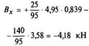

Пример расчета
Содержание:
Принятые обозначения:
η – КПД рассчитываемого участка передачи; i – передаточное отношение частоты вращения выходного вала к рассчитываемому; Т – вращающий момент рассчитываемого вала, Н·мм; Тв – вращающий момент выходного вала, Н·мм; β – угол между направлением действия силы и осью х; остальные обозначения указаны в решении примера.
Дано: вращающий момент на выходном валу Тв = 162000 Н·мм.
Найти диаметр промежуточного вала для участка передачи, схема которого изображена на рис. 13.
Рис. 13. Схема передачи к примеру для расчета
Решение примера приведено в табл. 11.
Рис. 14
Рис. 15
11. Решение примера
|
Определяемое |
Расчетная формула |
Расчет |
|
|
Вращающий момент с учетом ц |
T = Tвi1/η |
η = 0,96; T =162000·1 / 0,96 =1б9000Н·мм |
|
|
Окружная сила |
P = 2T/D |
P1 = 2·169000 / 75 =4,50кН; P3 = 2·169000 / 104 = 3,25 кН |
|
|
Силы, действующие на вал и подшипники |
Q ≈ 1,1Р |
Q1 = 1,1 · 4,50 = 4,95кН; Q3 = 1,1 · 3,25 = 3,58кН |
|
|
Реакция опоры в плоскости х и ус учетом знака (рис.14) |
Опора А |
||
|
Реакция опоры в плоскости х и ус учетом знака (рис.14) |
Опора А |
|
|
|
Опора В |
 |
||
|
Полная реакция |
Опора А |
||
|
Опора В |
|||
|
Изгибающий момент в опасном сечении (рис.14)
|
Плоскости х, у |
См. эпюры (рис. 14) |
Опасное сечение в опоре В |
|
Суммарный |
Ми = Мих = 161000 Н · мм |
||
|
Отношение Т/Ми в опасном сечении |
T/Ми |
169000 / 161000 = 1,05 |
|
|
Диаметр вала (по Ми, Н·м, и Т/Ми) |
По табл. 10 |
d = 30мм |
|
|
Угол наклона упругой линии в расчетном сечении в плоскости х |
Отдельно от каждой силы |
||

Продолжение табл. 11
|
Определяемое |
Расчетная формула |
Расчет |
|
|
Суммарный |
θх = 0,00068 + 0,00018 = 0,00086рад |
||
|
Угол наклона упругой линии в расчетном сечении в плоскости у (рис. 15) |
|
||
|
Угол наклона упругой линии в расчетном сечении |
|||
|
Прогиб в расчетном сечении в плоскости х |
Отдельно от каждой силы |
|
|
|
Суммарный |
ух = 0,0045 + 0,0008 = 0,0053см |
||
|
То же, в плоскости у (рис. 15) |
|
||
|
|
|||
|
Прогиб в расчетном сечении |
|
||
|
Допустимые величины |
θ в опоре |
0,001 |
0,00087 рад |
|
ymах, см |
0,0001…0.0005 = ymах; ymax =( 0,01…0,03)m; m – модуль в см |
0,0053 : 9,5 = 0,00056; ymax = 0,03 · 0,25 = 0,0075; фактически 0,0053 |
|


 /p>
/p>

Примечание. В отношении жесткости вала диаметр d = 30мм допустим. Для создания лучших условий работы подшипников и зубчатых колес следует принять d = 32мм.
12. Сравнение сплошных и полых валов различного сечения по наружному диаметру (d, d1), моменту инерции (J, J1), моменту сопротивления (W, W1) и массе
(площади поперечного сечения F, F1)
J1/J и W1/W – относительные значения моментов инерции и моментов сопротивления сечении полых валов как при изгибе, так и при кручении
|
d2/d1 |
При одинаковом наружном диаметре валов |
При одинаковой массе валов или при одинаковой площади сечения F=F1 |
При одинаковой прочности валов W1 = W |
При одинаковой жесткости валов J1 = J |
||||||
|
J1/J = W1/W |
Уменьшение массы, % |
d1/d |
J1/J |
W1/W |
d1/d = J1/J |
Уменьшение массы, % |
d1/d |
W1/W |
Уменьшение массы, % |
|
|
0,1 |
1,000 |
1 |
1,01 |
1,020 |
1,015 |
1,000 |
1 |
1,00 |
1,000 |
1 |
|
0,2 |
0,998 |
4 |
1,02 |
1,083 |
1,061 |
1,001 |
4 |
1,00 |
1,000 |
4 |
|
0,3 |
0,992 |
9 |
1,05 |
1,198 |
1,142 |
1,003 |
9 |
1,00 |
0,998 |
9 |
|
0,4 |
0,974 |
16 |
1,09 |
1,381 |
1,265 |
1,009 |
14 |
1,01 |
0,994 |
15 |
|
0,5 |
0,938 |
25 |
1,15 |
1,667 |
1,443 |
1,021 |
22 |
1,02 |
0,984 |
23 |
|
0,6 |
0,870 |
36 |
1,25 |
2ДЗ |
1,70 |
1,047 |
30 |
1,04 |
0,966 |
31 |
|
0,7 |
0,760 |
49 |
1,40 |
2,92 |
2,09 |
1,097 |
39 |
1,07 |
0,934 |
41 |
|
0,8 |
0,590 |
64 |
1,67 |
4,56 |
2,73 |
1,192 |
49 |
1Д4 |
0,877 |
53 |
|
0,9 |
0,344 |
81 |
2,29 |
9,53 |
4,15 |
1,427 |
63 |
1,31 |
0,766 |
68 |